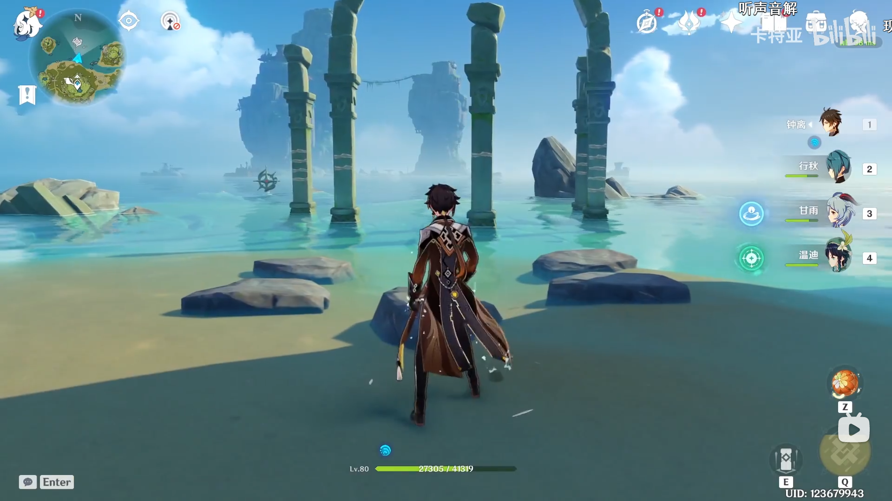

本文主要描述了我破解谜题的几次尝试，虽然最终都失败了，但它们在一定程度上也是自洽的，遂将其记录下来。正确解法可以参考 卡特亚的攻略视频。
踩踏外景石头会有不同的声音，沿凹字弧从左上到右上音调分别为：中、低、高、中、低，注意这里的两个低音是听不到，但这里猜测它们对应是“低音”，理由需要结合壁画来看。

我们把解谜的起点定为岛上的壁画，如图所示，首先不论采用何种发声模型，都可以假定水位和音调是线性相关的，首先推测高音音符和低音音符的数目比例是1比2或2比1，如果无声对应的高音，这个比例将变成2比2，显然和壁画矛盾。进一步可以确定发声模式为容器内空气振动的发声模型。（另外观察壁画上部也有像是流云/空气流动的样式）这样在壁画上沿同样的路线得到音列：中、高、低、中、低。
剩下的问题是如何把外景和壁画联系起来，于是有了两种假说。
外景柱子上的日志标记应该表示演奏次序，对应在壁画的音高依次为（粗略）：低、高、低、中、中。
然后再根据这个次序反推外景演奏次序，它变成了“2、1、3、4、5”。其中2、3可以对调，4、5可以对调，因为这个答案比较粗糙，所以需要继续寻求其他解释。
对比内壁和外景音列：
| 外景 | 中、低、高、中、低 |
|---|---|
| 内壁 | 中、高、低、中、低 |
为了将它们对应起来，光移位（旋转）是不够的，还需要一次水平翻转。对此我的解释是音符的相对关系本来就取决于观察的角度，正如岩壁和地面也不是两种不同的观察角度。于是它们的对应关系是：
| 外景 | 4、2、1、5、3 |
|---|---|
| 内壁 | 5、1、2、4、3 |
于是查表反推出外景的演奏次序为：“2、1、3、5、4”。注意到假说二的答案同时也是假说一的答案，而且假说二的答案唯一。
回头来看这些假说有很多局限性，首先把无声算作低音其实是很牵强的（虽然这部分包括发声模型都蒙对了），这时候应该考虑推理的条件是否完备。其次是两个低音对应的水位是有微小的差别的（外景里两个中音音高也有微小差别，5比4高一点），这些细节假说都忽略了。